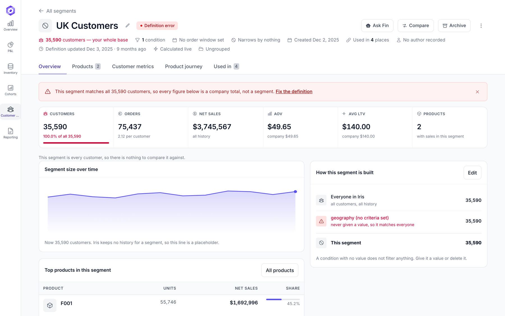
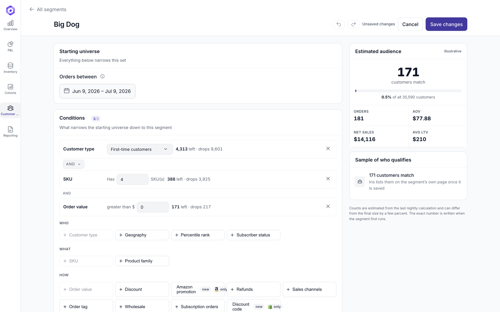

Customer segments: the best-looking rows were the broken ones
Five of the forty segments returned the entire customer base. Carrying the most revenue, they ranked first.

Audit of the live page
No spec existed, so the live page became one. Measured from the DOM.
| Measure | Value |
|---|---|
| Table height | 4,837px — six screens |
| Row height | 73px to 248px |
The word AND on one page | 58 times |
| Sortable headers | 0 of 10 |
| Search / filter / pagination / bulk select | none of the four |
| Rows showing no data | 17 of 40 |
| Contrast of the “—” placeholder | 2.31:1 (AA needs 4.5:1) |
Headings in <main> | 0 — the title is not an h1 |
The finding
Three segments returned byte-identical numbers — 35,590 customers, 75,437 orders, $3,745,567 net sales. Eight had never been calculated, 22 were over 30 days stale, and seven had “California” in the name, one spelled Calfirnoia.
So the question stopped being visual: how does a list show which rows can be trusted, without becoming a wall of error states?

Decisions
- Sorted by what cannot be trusted, not by what earns most The live product ranks broken segments top because revenue puts them there. My first version reproduced that by sorting on customer count.
- Refused to fill empty rows with plausible numbers Eight segments never ran; they read “no data”. Also removed: a catalogue inventing SKUs and a country found nowhere in the data, and an estimate panel naming four customers on an empty form.
- Removed “% of company revenue” Segments overlap, so the column sums to 855% across the forty.
- Measured a layout, deleted it, withdrew my own review note I had argued a condition column gives the eye a rail. Across 40 rows both layouts aligned at an identical left edge, sd 0px. The column version lost on five of seven measures: 235px of travel from name to condition, 44 wrapped conditions against none, 898px more table height.
- No rank for empty segments, no confidence score Last place reads as a verdict on a segment that never ran. Instead of a made-up percentage for the plain-language parse, the screen shows its working.
- Took the defect counts out of the headline The product owner expects future data to have its own problems. Three counts left the summary strip, the chart lost eight red bars, and a filter that would return nothing is dimmed and inert. The information stayed reachable.

Review
| Pass | Result |
|---|---|
| Business analysis | 14 assumptions surfaced, 12 questions written |
| QA, risk-based | 13 defects, all closed |
| All three passes | 48 defects closed before the review call |
| Product owner's review | 29 points, 28 closed |
| Accessibility, 375–1440px | 0 contrast failures, 0 targets under 24px, 0 unnamed controls |
The one point left open is not a design question: which segment templates to ship is the owner's call.
Known gap
The comparison page answers a different question than the live comparison does — written into the handoff as the largest gap.
Open the prototype → List, detail, builder and comparison, with the segments that are genuinely broken. The earlier variant stays live at/pages/segments.html.